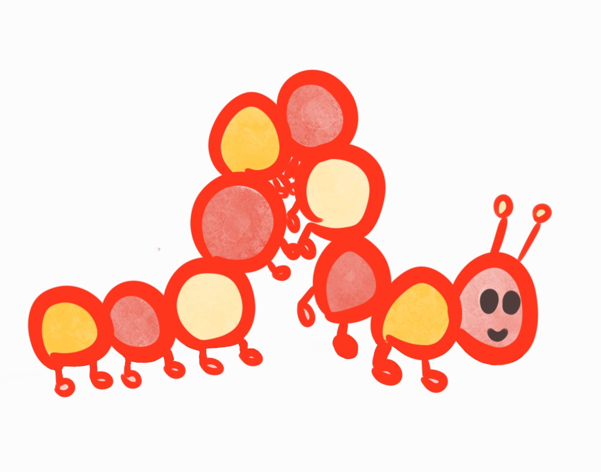

Other Poetry:
- “Jeopardy!: The Category Is Exploration” and “Mother’s Embrace” (Black Lawrence Press, forthcoming)
- "Ballad Aglitter With Brief Fishes" (Bloodletter, forthcoming)
- "GoFundMe Martyr" (Lilac Peril, forthcoming)
- “Ahab Can Make,” “There Is Better Red Paint Than Blood,” and “Marriage on Centre St.” (Leviathan, 2025)
- “Polyp Living” and “Big Woman, Small Man” (Transfix Magazine, 2025)
- “The Flap” (Dilettante Army, 2024)
- “The Era of Letting It Happen” (The Journal, 2023)
- “Asian American Adoptee’s Dialogue with Phillis Wheatley” (Boston Athenæum, 2023)
- “RED REN SEE AND SKY” (Cultbytes, 2022)
- "Permabeauty in the Boston Athenæum" (Mass Poetry, 2022)
- “I Suppose I Mean Printmaking” (Neondoor Lit, 2022)
- “RED APHRODITE” (Hobart Pulp, 2022)
